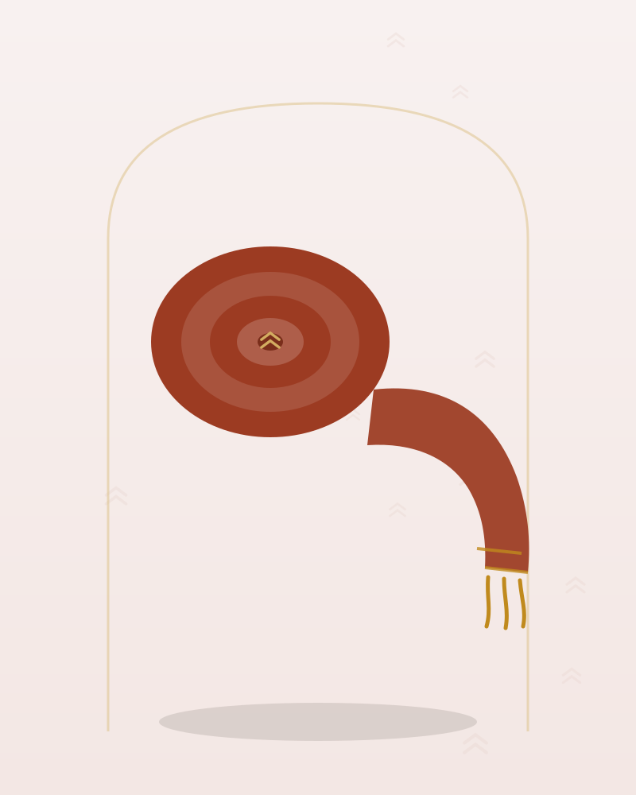

Colemêrg · Aksesuar
Colemêrg Yöresi Yün Şûtik – Kiremit Balıksırtı Desenli
380 TL
Ön sipariş tahmini fiyatıdır · KDV dahil
Colemêrg tezgâhlarında dokunan yün şûtik; kiremit zemin üzerinde balıksırtı desen taşır, kış düğünlerinde ve halaylarda beli sıkıca sarar.
💡 Henüz satış yapılmıyor. Talep bıraktığınızda bu model, satış başladığında öncelikli olarak üretilecek ve size özel erken erişim tanınacak.
| Kategori | Aksesuar |
|---|---|
| Yöre | Colemêrg |
| Kumaş | Yün Dokuma |
| Renk | Kiremit |
| Durum | Ön sipariş (talep toplama aşamasında) |
| Ürün Kodu | KY-ACYSK-38 |